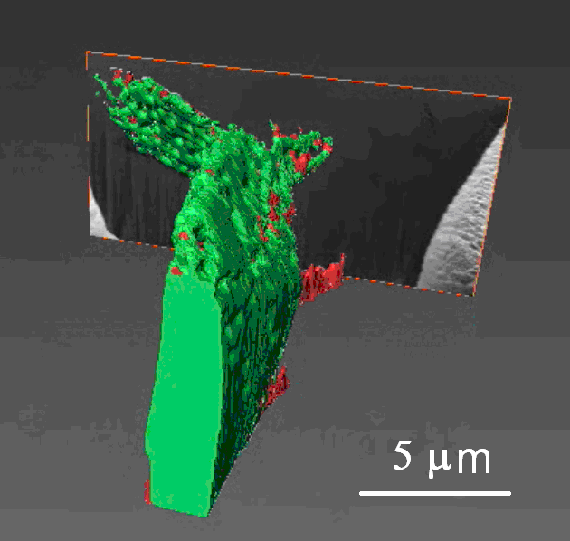
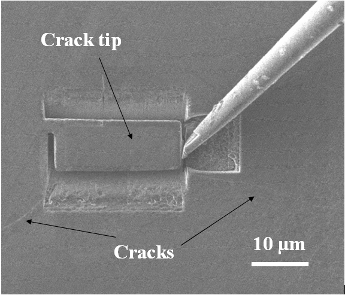
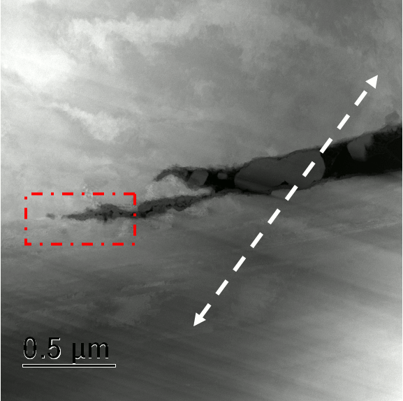
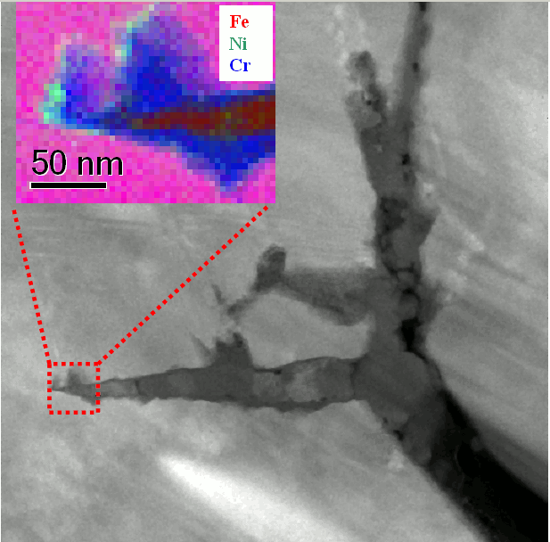
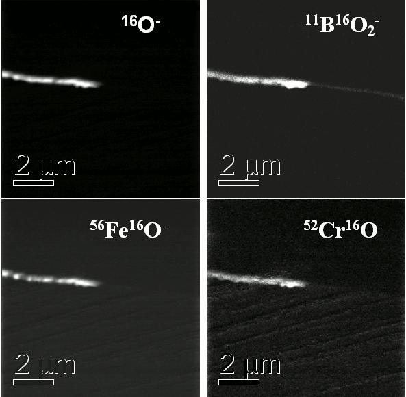
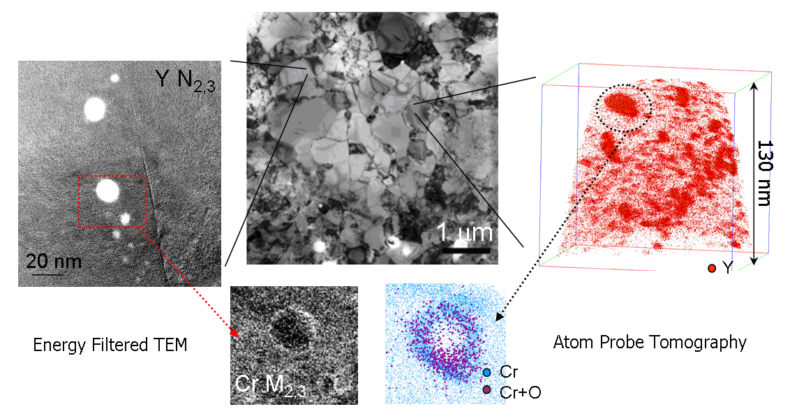
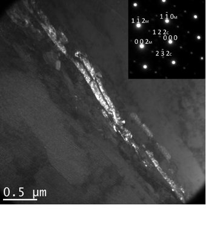
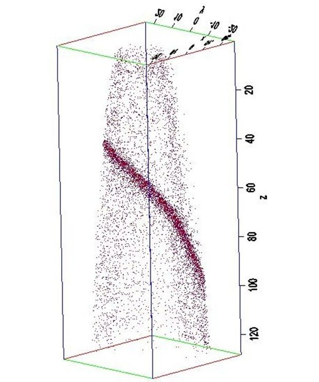

Projects
Multi-scale characterization of stress corrosion cracking
Sponsored by INSS (Japan).
An innovative multi-technique approach which involves 3D atom-probe, NanoSIMS, High-resolution analytical (S)TEM, EBSD and electron tomography is being used to understand the mechanisms governing crack initiation and crack propagation in austenitic stainless steels from nuclear reactors.
Principal investigator: Dr Sergio Lozano-Perez (University of Oxford)
DPhil student: Karen Kruska (started Oct 2008)
Collaborators: Dr Lionel Cervera-Gontard, CEN, Danish Technical University, Copenhagen (Denmark), Drs Takumi Terachi and Takuyo Yamada, INSS, Tsuruga, Japan
- 
- 
- 
- 
- 
Understanding the mechanisms which control Zr and Zr-alloys oxidation and Hydrogen pick-up
Sponsored by EPSRC.
Zr-alloys are used as cladding material for the nuclear fuel in most of the nuclear reactors in operation. Despite their good corrosion behaviour, they undergo a semi-catastrophic transitions where the protective oxide layer breaks away. We are trying to understand the mechanisms which control such transition as well as related hydrogen pick-up mechanisms by using HREM, high-resolution analytical (S)TEM, 3D atom-probe and NanoSIMS.
DPhil students: Sean Yardley
Co-investigators: Prof Chris Grovenor and Dr Sergio Lozano-Perez (University of Oxford)
Participants: University of Oxford, University of Manchester, University of Birmingham, The Open University, GE and EdF.
Characterization of Y2O3 nanoprecipitation in ODS FeCr steels
Sponsored by the EU FP6 Euratom.
ODS FeCr steels have been chosen as blanket materials for the new ITER experimental fusion reactor. Their optimum mechanical and corrosion behaviour relies on a fine dispersion of Y2O3 precipitates which is challenging to characterize. Cs-corrected EFTEM and 3D atom-probe have been used successfully to detect and analyze precipitates as small as 1nm in diameter.
Co-investigators: Drs. Vanessa de Castro, Emmanuelle Marquis and Mike Jenkins (University of Oxford)
Participants: University of Oxford, University Carlos III (Madrid, Spain)
- 
Irradiation damage of structural materials for nuclear applications
Sponsored by the Black Family scholarship and the Department of Materials.
This project investigates small scale changes in structure and chemistry of low activation steels for fission and fusion structures. TEM and atom-probe tomography will be used to characterise irradiation resistant oxide dispersion strengthtened steels (ODS) with special interest on the formation of the ODS nanoparticles in different matrices and processing conditions.
DPhil students: Andrew London
Co-investigators: Prof Chris Grovenor and Dr Sergio Lozano-Perez (University of Oxford)
Participants: Indira Gandhi Centre for Atomic Research (India)
MINTWELD: Modelling of interface evolution in advanced welding
Sponsored by the EU FP7 Mintweld.
High-resolution analytical (S)TEM and 3D atom-probe will be used to validate the results obtained from modelling at different scales of interface microstructure evolution during welding. (Starting Jan 2010)
Co-investigators: Prof Alan Cocks (University of Oxford)
Participants: University of Oxford, University of Leicester, University College Dublin (Ireland), Norwegian University of Science and Technology (Norway), Corus UK Limited, Royal Institute of Technology (Sweden), Delft University of Technology (Netherlands), The Welding Institute, Institute of Welding (Poland), FRENZAK Sp. (Poland), Ecole Polytechnique Federale de Lausanne (Switzerland)
- 
- 
Advanced electron microscopy of core-shell catalyst nanoparticles
Sponsored by EPSRC and Johnson Matthey.
The microstructure and chemical composition of Pt/Pd core-shell nanoparticles will be characterized using high-resolution analytical (S)TEM and HAADF. Special emphasis will be placed on the simulation of EDX spectra to fully understand the experimental results.
DPhil students: Haibo E (Started Oct 2008) and Katherine MacArthur (Started Oct 2011)
Co-investigators: Dr Pete Nellist (University of Oxford) and Dogan Ozkaya (Johnson Matthey)